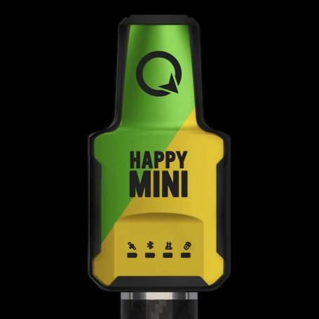

The QField certifies hardware program is designed to provide you with hardware that has been thoroughly tested and certified by our team to work seamlessly with the latest QField version across various platforms.
By choosing a QField Certified device, you can rest assured knowing that your hardware has been tested and validated by our team of experts on the following criteria
Functionality
The device has been checked and confirmed by the QField team to work flawlessly with QField.
Compatibility

The device is compatible with the latest version of QField.
Platform versions
The device supports one or more platform versions including Android, iOS, Windows, macOS, and Linux.
Ongoing validation
The device will continue to be tested and validated with newer versions of QField.
Certified devices
By using the Buy now referral links provided below, you are directly supporting the development of QField. Your contribution helps us to continue improving and expanding this project.
Certified Devices

Device 1
Description of device 1. Compatible with the latest QField versions.

Device 2
Description of device 2. Compatible with multiple platforms.

Device 3
Description of device 3. Seamless operation with QField.
Happy Mini Q
The happy mini Q is a 170 gramms sub-centimetre GNSS with IMU build explicitly for QField